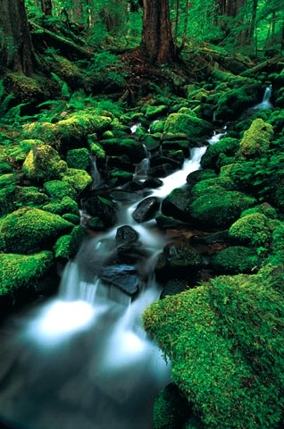
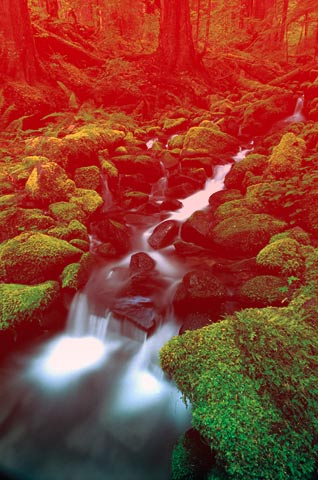
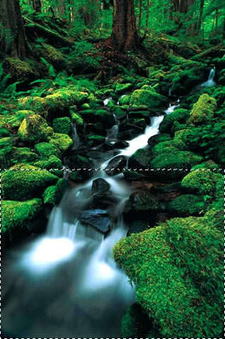

Gradient mosaic
5 March, 2017 – Art. 1 – First published on Ka of Isis 060216
To make a gradual transition from “natural” to a mosaic pattern in a picture, employ Photoshop’s Quick Mask Mode, the Gradient Tool, and a filter.
1. Open a photograph (or any image, really) in Photoshop. RGB or CMYK? Both work.
Fig. The original image.
2. Hit D to select black for the foreground colour and white for the background colour.
3. Switch to Quick Mask Mode.
Fig. Quick Mask Mode in the Tools panel.
4. Select the Gradient Tool, make sure that the gradient is set to Foreground to Background and that a Linear Gradient is chosen.
Fig. Gradient Tool in the Tools panel.
Fig. Foreground to Background in the Options panel.
Fig. Linear Gradient in the Options panel.
5. Drag a straight line (i.e. with the shift-button pressed) from where you want the final effect to be at its weakest to where the effect should be in full; in this example all the way from the top of the picture to the bottom.
The mask appears as a red colour in the image and the gradient is clearly seen. Where red is most prominent, the mask will be the most efficient thus masking out more of the effect (to come).
Fig. Quick Mask applied to the original image.
6. Switch back to Standard Mode.
Fig. Standard Mode in the Tools panel.
The marching ants rectangle in the image seems to indicate that only part of the picture is selected for further processing, but rest in peace; Photoshop is (litterally) only telling half the picture here. Trudge on.
Fig. The (deceiving) mask in Standard Mode.
7. For better to see the results of your next move, hide the selection (keyboard shortcut: cmnd/ctrl+H).
8. For the finale grande; choose Filter > Pixelate > Mosaic… and apply a Cell Size to satisfy your needs.
Fig. The size of each mosaic tile.
Note: Cell Size refers to the number of pixels affected as a square group (in our example, 21x21 pixels). If a multiple of the cell size does not add up to the width/height of the selected mask area, it may be neccessary to crop the image right/bottom – after filter application – to get rid of borders with “non-square” cells. This was the case with the sample image; bottom rectangles were 21x18 each and the right hand side rectangles had widths of only 3 pixels. The final image was cropped from 318x480 to 315x462.
9. Deselect the selection (cmnd/ctrl+D) and you have the final image.
Fig. The final image.
Post scriptum: The method is, of course, not restricted to gradual mosaic transitions. It may be generally applied whenever a gradual transition is wanted. And, as an added bonus, whenever Quick Mask Mode is used, there is no mask channel to remember to get rid of. It quietly goes away when you return to Standard Mode.